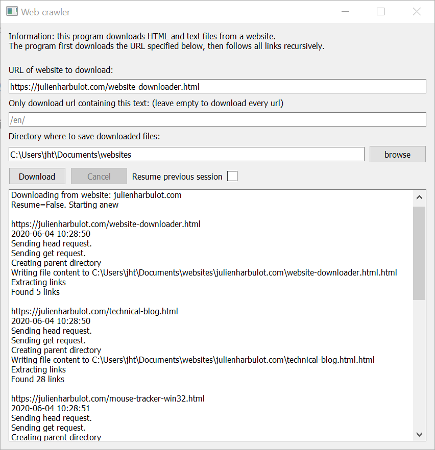

As part of my tool to extract text windows, I created a small program able to download every .html and .txt files on a website. The tool has a graphical user interface (GUI) so that my friend can use it easily. It took me a whole day from 8am to 10pm to code both this website downloader and the text window extractor. For both tools, coding the GUI and linking its input/output to the backend script took half of the development time. Although I feel like I was really slow on the GUI part, it's very gratifying to code a fully functional (albeit simple!) program that someone else will use. Usually I create non-graphical scripts for myself so this time feels like a stepping stone towards creating apps rather than scripts. Table of contents Download & installation Screenshot & usage About the code Download & installation You can download the app for Windows on the release page. Just look for the .exe file on the page and click on it to download. Because it's coded in python, the app also works on MacOS and Linux. But I didn't create a binary for these platform. You can checkout the GitHub repo and run the python code directly. Screenshot & usage Here's a screenshot of the user interface. It's not pretty but I needed to iterate fast and it's functional. There are text fields to specify (1) which URL the tool should crawl, (2) a filter to visit only some URLs and (3) where the files should be stored on disk. A checkbox allows to choose whether the script should resume a previously interrupted download session. Finally, a text area shows the script's (stdout and stderr) output.  About the code The whole script holds in a 371-lines file. (including blank lines and comments). The core code used to download the website is not very sophisticated. It's a simple graph-traversal algorithm where webpages are nodes and links are edges. To download the files, I used the python requests library, and to parse the links in the HTML, I used the python beautifulsoup library. Here's the algorithm in pseudo-code: to_download = set(original_url) downloaded = set() while to_download: url = to_download.pop() if url in downloaded: continue r = requests.head(url) i = read_informations(r) if should_download(i): r = requests.get(url) write_file(i, r) links = extract_all_link(r, downloaded) to_download.update(links) The GUI is coded using the python library PyQt5 which enable cross platform interfaces. For such a simple GUI, I could have used a smaller library but I had previous experience with Qt and decided to use something that I (kinda) know.
Other articles you might like: Keyboard shortcut and command line utility to switch display (Windows) Using WSL-2 as a dev environment An information theory perspective on probability